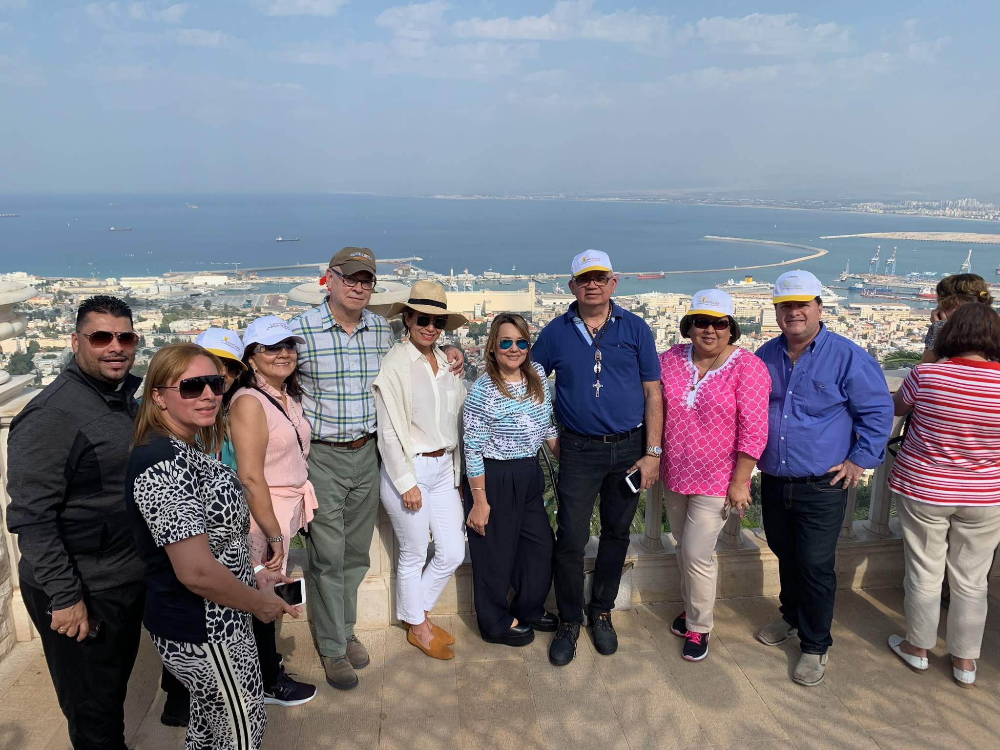

Nuestro peregrinaje a Tierra Santa en 2019 fue un viaje transformador por los lugares sagrados del cristianismo. Seguimos los pasos de Jesús desde Belén hasta Jerusalén, y desde las orillas del Mar de Galilea hasta las alturas del Monte Tabor. Los peregrinos participaron en la misa diaria en lugares sagrados, oraron en la Iglesia del Santo Sepulcro, tocaron las aguas del río Jordán y experimentaron la profunda significación espiritual de los lugares donde comenzó nuestra fe. Esta travesía de fe dejó recuerdos imborrables y fomentó un crecimiento espiritual en todos los participantes.


